Private presentation preview. Saved result verified; R3 fresh solve verified; All six negative controls rejected
Input snapshot: mcl_s0_to_v_presentation_inputs_r3_v1@2026-10-05T03:57:54.309662+00:00. Input version: chicago_jane_byrne_west_loop_2023resident_2026activity_hbw_am; frozen configuration SHA-256 e8fff06e035b36e2fb4ec257416154c4895d083f75a753baff8fb1a2e5a20fae.
Scope and model instance
Chicago here means the Jane Byrne interchange and West Loop study rectangle, bounded by −87.670 to −87.625 longitude and 41.864 to 41.893 latitude. Its projected area is 12.023 km² in EPSG:26916. Five clipped community-area fragments provide zones for a resident-origin HBW scenario in the weekday 08:00–09:00 local hour.
This georeferenced street case is distinct from Chicago Sketch, Chicago Regional and the earlier Traffic Assignment Lab teaching display. It neither reruns TemplateFit nor certifies diamond layouts, UTDFX output or lane movements. The local Sketch files contain 933 nodes, 2,950 directed links and 387 centroid nodes; Regional has 12,982 nodes, 39,018 links and 1,790 centroids. Those demand-bearing benchmarks were checked against their TNTP metadata, but their audited conversion did not certify street geometry or CRS. Their IDs are therefore not forced onto this OSM map.
A Dan Ryan/Stevenson alternative was considered through a bounded source-count query returning 10,349 highway ways, including 167 with _link tags. Jane Byrne/West Loop was chosen for the detailed case because the acquired roads, interchange objects, stop tags and official zones provided a workable bounded input. The alternative remains a source inventory, not a second processed or assigned network.
Inputs and preparation
The source query records the OSM database at 4 October 2026, 18:24:21 UTC. Ways are split along their original node sequences and clipped to the rectangle; synthetic edge terminals are specific to each way. Shared node identity creates a junction, whereas crossing lines in a two-dimensional view do not. Source way/segment IDs, WGS84 geometry, access, direction, bridge/tunnel and layer fields remain traceable.
The full clipped compilation contains 95,225 directed GMNS links built from 52,014 physical node-pair segments and 40,990 nodes. It retains 146 undirected components, with 40,080 nodes in the largest. The auto graph has 924 strong components, the largest containing 15,154 nodes. These counts describe the source graph, not the final demand graph or universal drivability.
The earlier F01 drew 17,998 unique auto-eligible physical source segments in EPSG:32616. The updated source figure draws all 27,129 retained physical directed traversals in the current model, projected in EPSG:26916; reciprocal arcs can share geometry. Source compilation lengths also use EPSG:26916. Unknown capacity and free-speed values remain unknown in the preflight. The subsequent model explicitly supplies its engineering parameters; the figure itself contains no virtual connectors or assigned traffic.
The five intersecting City community areas are Near North Side, West Town, Near West Side, Loop and Near South Side. Each clipped polygon retains its official identity, area and interior representative point. Applying clipped-area fractions to 2023-end ACS whole-community populations produces an approximate 73,375 residents inside the rectangle. This uniform-area allocation is uncertain in dense, mixed-use neighborhoods and is neither a block census nor a campus count.
The four-stage road graph is a screened strongly connected component with 15,133 nodes and 27,129 directed links. Each of the five access anchors lies on that graph, on a walk-eligible street and within the relevant clipped polygon. This new zone abstraction does not retroactively fill the empty preflight connector table or certify driveways and crossings.
The model combines 2023 allocated population with 2026 active business-license records used as attraction weights and the 2026 OSM street source. Business licenses are not measured employment. Household counts are unknown, and income categories in the City source concern families. These heterogeneous inputs do not describe a single observed year or provide local calibration.
Retained physical road graph

Description, units and scope
27,129 retained physical directed traversals in the saved 08:00–09:00 HBW model, shown in EPSG:26916. This is the retained model graph, not a claim to draw every road in the source archive. Virtual movements are excluded; colour has no traffic meaning. © OpenStreetMap contributors / ODbL. Reciprocal directed arcs can share geometry; no assigned flow is encoded. This drawing uses the frozen runs/chicago_core_hbw_am_v1 evidence. Later supplementary datasets are separate and are not implied to have entered this scenario.
PNG · SVG · PDF · Source record
Resident population inputs
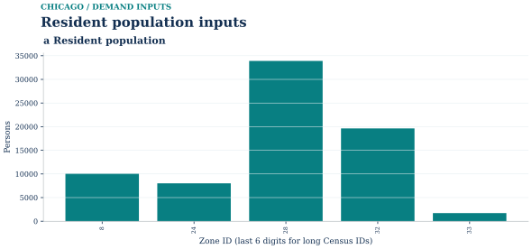
Description, units and scope
Clipped community-area allocation of ACS population; uniform-area assumption. All 5 zones are retained; population total 73,375.2. Households are unknown. Missing household fields are unknown, not zero. Census/ACS allocation is an input, not a simulated traffic quantity. This drawing uses the frozen runs/chicago_core_hbw_am_v1 evidence. Later supplementary datasets are separate and are not implied to have entered this scenario.
PNG · SVG · PDF · Source record
Transit source geography

Description, units and scope
OSM source-tagged stops; no service calendar. 953 saved stop records. Stop tags and road proximity do not prove legal walk access or operating service. The frozen scenario has no accepted service-day transit paths; no zero-demand transit bar is implied. The gray retained road graph is geographic context, not a transit route model. Source stops and route shapes do not establish legal pedestrian access, operating service, or observed ridership. This drawing uses the frozen runs/chicago_core_hbw_am_v1 evidence. Later supplementary datasets are separate and are not implied to have entered this scenario.
PNG · SVG · PDF · Source record
01 / Trip generation
The assumed production rule is 0.4 HBW trips per resident per day with a 35% AM-hour fraction. It gives 10,272.533873691 persons in the hour. The predeclared capture and intrazonal shares allocate 7,190.773711584 to external or uncaptured travel and 246.540812969 to intrazonal travel.
The remaining 2,835.219349139 persons enter interzonal distribution. Attraction mass is weighted by active licenses and normalized to productions. The five-zone bars are saved scenario outputs rather than observed commuting. External entering commuters have no measured input in this model and are not added to the internal matrix.
Trip generation and demand accounting
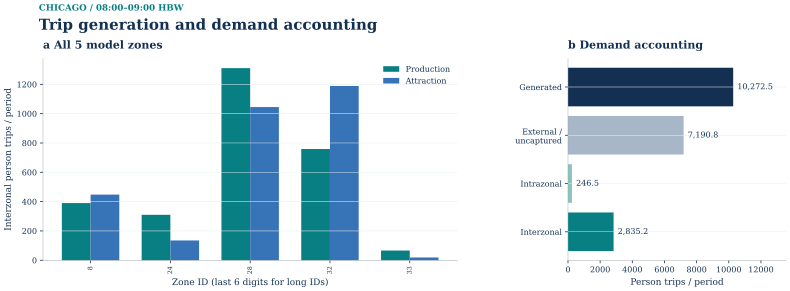
Description, units and scope
All 5 zones; 08:00–09:00 HBW. The left panel shows saved interzonal productions/attractions. The right panel accounts for all generated persons, including excluded and intrazonal components. No top-12 truncation. Scenario assumptions, not measured trip counts. External and intrazonal components do not enter interzonal assignment; attractions are normalized to productions. This drawing uses the frozen runs/chicago_core_hbw_am_v1 evidence. Later supplementary datasets are separate and are not implied to have entered this scenario.
PNG · SVG · PDF · Source record
02 / Trip distribution
Gravity uses shortest travel time on the directed source-road model, followed by IPF. All twenty positive interzonal pairs are balanced; twenty is the complete pair set for the five modeled zones, not a selected smoke sample. Twenty-seven iterations leave a maximum margin discrepancy of 2.40705383×10⁻⁵ persons.
The declared AM PA direction is applied once to obtain 2,835.219349139 directed person trips. Intrazonal and excluded travel remains in the generation ledger. No Sketch or Regional OD data is substituted. The heatmap order follows official zone IDs 8, 24, 28, 32 and 33 on both axes. Color is log(1 + persons), but the downloadable numerical table retains the untransformed quantities.
Trip distribution and directed OD margins
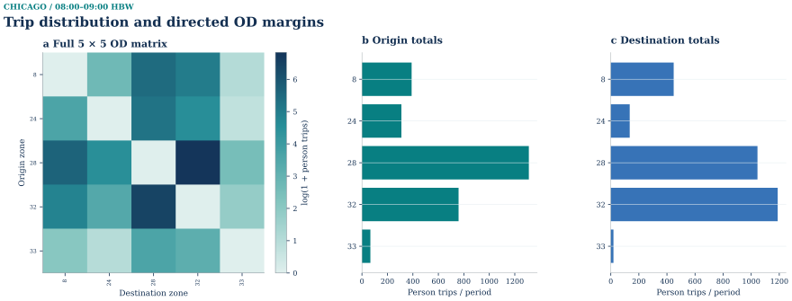
Description, units and scope
Full 5×5 model-zone matrix including zero cells; 20 positive OD pairs and 2,835.219349139 persons in 08:00–09:00 HBW. Colours are log(1+persons); margins are untransformed directed OD totals after PA direction. Every model zone is retained. Zero rows and columns remain visible; intrazonal cells are structural zeros. Labels use the final six digits of long zone IDs. This drawing uses the frozen runs/chicago_core_hbw_am_v1 evidence. Later supplementary datasets are separate and are not implied to have entered this scenario.
PNG · SVG · PDF · Source record
03 / Mode choice
Driving is available on all twenty pairs. Walking is available on ten under the frozen 35-minute path limit. Their OD-specific routed time, money and access terms feed a conditional logit; the resulting sums are approximately 2,105.938 drive and 729.281 walk persons. No internal interzonal person is left without an option.
Transit is Not modelled. CTA's Developer License Agreement was not accepted for this run, and a licensed service-day cost matrix was not obtained. The case therefore makes no transit ridership estimate, and an unmodeled transit label must not be shown as a prediction of zero passengers. Dividing drive persons once by the assumed 1.2 occupants per vehicle gives 1,754.948251240 vehicle/PCE trips. Walk persons are recorded without a capacity assignment.
Mode choice: demand, cost and availability
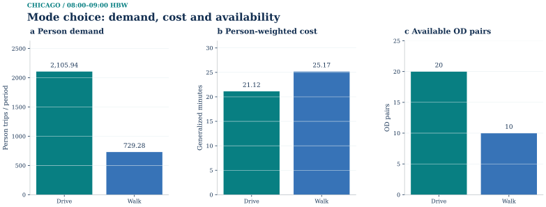
Description, units and scope
Saved OD-specific choice in 08:00–09:00 HBW; sums over every positive-demand OD. Persons, person-weighted generalized minutes, and available OD counts have separate axes. Transit is not modeled; no zero bar is shown. Generalized cost includes model time and money terms. Person totals precede the separate occupancy-to-PCE conversion. This drawing uses the frozen runs/chicago_core_hbw_am_v1 evidence. Later supplementary datasets are separate and are not implied to have entered this scenario.
PNG · SVG · PDF · Source record
04 / Physical-link assignment
The exact twenty-pair Stage 3 PCE file feeds static BPR Frank–Wolfe. The saved run makes three genuine updates and ends at relative gap 2.0989113152700773×10⁻⁵, below tolerance 10⁻⁴. Its objective is 5,601.462458069 PCE-min. Of 27,129 retained links, 1,891 carry positive loading; maximum modeled v/c is 0.97274. BPR would also permit a ratio above one without imposing a hard capacity constraint.
Direction and shared-node topology are source based, but OSM restriction relations were not fetched. Their status is UNKNOWN_NOT_FETCHED, not a finding that restrictions do not exist. This correction accompanies the frozen evidence without rewriting its hashed network_semantics field. Real turn legality and parcel access remain unverified.
A01 uses the most-loaded directed segment for each distinct OSM way. It never adds flows across serial segments to manufacture a way volume. A03 reports ten selected links from that same solution, while the R3 flow map uses the frozen source crosswalk to place physical-link PCE geographically. Existing display-only label repairs preserve the full original-link mapping and prevent truncated IDs from collapsing distinct bars.
A02 retains the actual saved iteration values. The road maps and bar charts are views of one solution, not new solves. Colors, v/c and BPR travel times describe the assumed scenario; no traffic counts were inferred from image pixels or map appearance.
Frank–Wolfe: physical-road loading
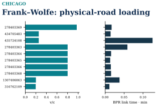
Description, units and scope
v/c and one-hour BPR link time on ten representative loaded directed segments from distinct source ways; capacities are engineering proxies. Single-pass engineering scenario; no local empirical calibration. Jane Byrne / West Loop 12.023 km2
PNG · SVG · PDF · Source record
Frank–Wolfe: physical flow and distribution

Description, units and scope
Saved Chicago static Frank–Wolfe endpoint for 08:00–09:00 HBW. The map and 22-bin histogram use the same complete 27,129-link physical-flow vector, including 25,238 exact-zero links; 1,891 links exceed 1e-6 PCE. Flow is PCE accumulated during the declared one-hour period, not persons or flow per simulation time step. The map uses a square-root sequential color scale with original-unit ticks and gray road context; histogram counts are linear and no links are omitted. Turn, access and other nonphysical solver arcs are excluded. The endpoint follows 3 actual FW updates; all 4 saved checks remain separate diagnostic evidence. Reciprocal directed arcs may overlap geometrically; flows are not summed. This full saved static case is distinct from the separate S20 and T4 method-transfer instances. This is a modeled engineering scenario, not observed traffic. © OpenStreetMap contributors / ODbL 1.0. R11 layout repair: map and all-link histogram share measured top and bottom panel bounds. The original saved physical-link IDs, exact flow vector, geographic vertices, display offsets, histogram edges and counts remain unchanged.
PNG · SVG · PDF · Source record
Saved initial checks and original endpoint views
Saved results and assignment checks
R3 receiver evidence includes a saved-result PASS, a fresh four-stage calculation from frozen inputs, successful saved-table comparison and six rejected negative controls. The producer's independent checks had already followed hash continuity, OD margins, availability and probability arithmetic, person-to-PCE conversion, path/link flow, node conservation, objective and full-network gap.
The earlier preflight had its own solver-free reproduction. A fresh directory with spaces and Chinese characters reproduced eight selected CSV files byte for byte and passed structural checks. Other checks covered crosswalk hashes, link geometry direction, sampled metric lengths, zone areas and representative points, population allocation, stops and S2 conservation. Those interface tests must not be presented as the four-stage solve itself.
Saved initial checks and original endpoint views
Frank–Wolfe objective and relative gap
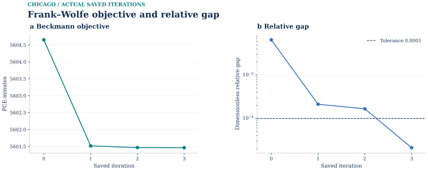
Description, units and scope
4 saved record(s), 3 updates; final objective 5601.46245807 PCE-min, gap 2.09891131527e-05 against 0.0001. Original iteration samples and objective retained. An accepted numerical gap concerns this scenario and demand set; it does not certify real traffic conditions. This drawing uses the frozen runs/chicago_core_hbw_am_v1 evidence. Later supplementary datasets are separate and are not implied to have entered this scenario.
PNG · SVG · PDF · Source record
Static assignment: demand margins and physical endpoints
Static assignment demand margins

Complete evidence · same figure · SVG · PNG · PDF · Plot data · Source record · Caption
Physical demand endpoints

Complete evidence · same figure · SVG · PNG · PDF · Plot data · Source record · Caption
Time-expanded network and path examples
Time-expanded network in layers
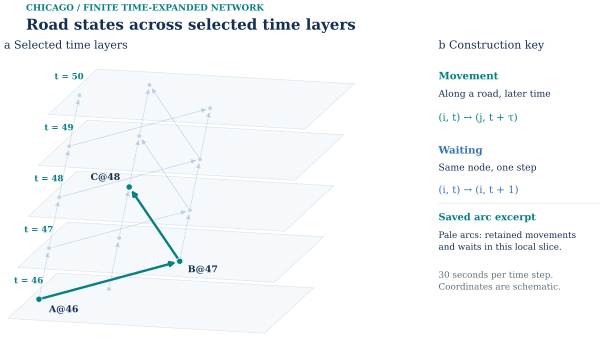
Complete evidence · same figure · SVG · PNG · PDF · Plot data · Source record · Caption
Local construction details
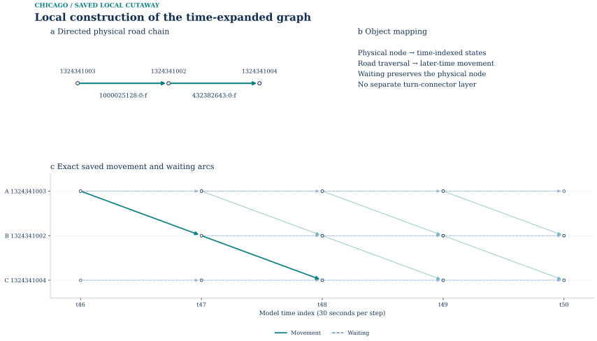
Complete evidence · same figure · SVG · PNG · PDF · Plot data · Source record · Caption
Optimization on the time-expanded network
Lagrangian bounds and certified gap
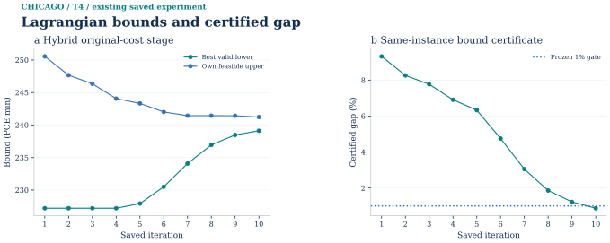
Complete evidence · same figure · SVG · PNG · PDF · Plot data · Source record · Caption
Capacity prices at the best dual bound
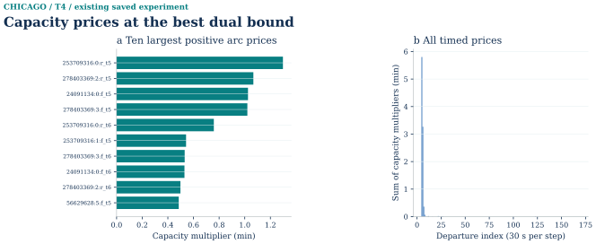
Complete evidence · same figure · SVG · PNG · PDF · Plot data · Source record · Caption
Path-pool growth and primal recovery
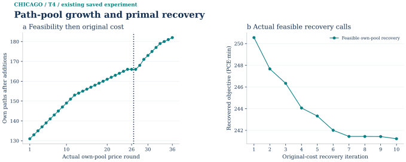
Complete evidence · same figure · SVG · PNG · PDF · Plot data · Source record · Caption
ADMM: saved continuation to outer116
The saved ADMM continuation reaches outer 116 but remains unconverged. Original x is infeasible: capacity excess 0.0421644796900 PCE, primal 0.121224522778 PCE, dual 0.0391348952092 min and endpoint stationarity 0.0250952425689 min. The CG objective difference is not evaluated. Outer 34–36 retains the original coordination; 37–116 uses the registered alpha=1.6 candidate.
ADMM: actual history and original stopping gates
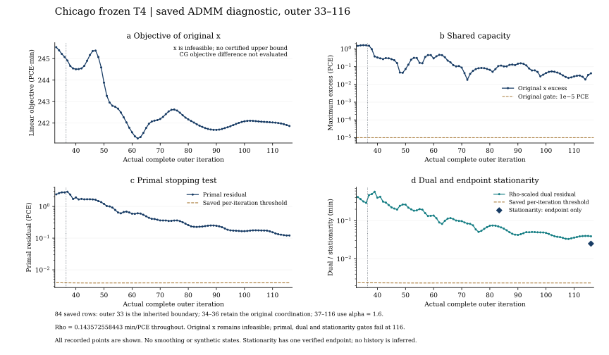
All 84 actual saved rows from outer 33–116 are plotted. Outer 33 is the inherited boundary; 34–36 retain the original coordination and 37–116 use alpha=1.6 (divider at 36.5). Panels show original-x objective in PCE·min, capacity excess in PCE, primal residual in PCE and rho-scaled dual residual in min, with saved original thresholds. Rho is fixed at 0.14357255844301195 min/PCE and has no separate panel. The stationarity diamond is the only verified endpoint shown, not an invented history. At outer116 the original x remains infeasible; its objective 241.864094592416 PCE·min is not a feasible upper bound. CG objective difference is not evaluated, not zero. Provider audits and two completed exact-archive read-only replays are reused; mainline checked the saved histories and signatures without running an optimizer.
SVG · PNG · PDF · Saved history · 84 rows · Endpoint checks · Verification identity · Source and reuse notice
ADMM: original-x capacity excess at outer116
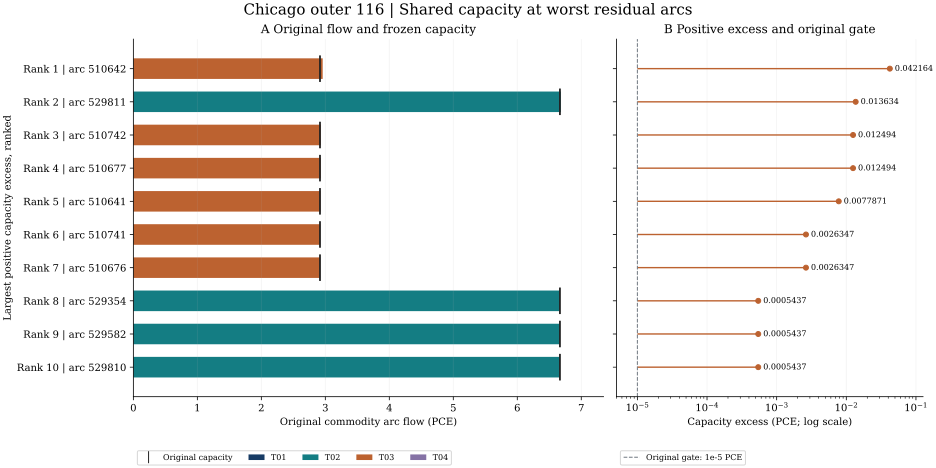
The ten largest positive original-x capacity excesses at outer116 are ranked. Commodity bars retain PCE flow, black marks are the frozen per-arc capacity, and the right panel shows positive excess against the original 1e−5 PCE gate. The maximum is 0.0421644796900 PCE. These are generated time-arc model values, not measured passenger records. Reused provider figure; no numerical or geometric change. This failing diagnostic does not relabel successful CG or LR hybrid results, the old pure-LR endpoints, or the failed rank26/52 reductions.
SVG · PNG · PDF · Saved capacity rows · Endpoint checks · Verification identity · Source and reuse notice
Low-rank26/52 remain below their gates. The I80/full-minor result is not a compression success. The accepted LR hybrid does not reclassify the older pure-LR endpoint. These saved diagnostics were checked by the provider and two existing read-only archive replays; mainline performed only summary/history/signature checks.
Reproduction and input identity
Current S0 reception and the released algorithm figures are integrated in the current method record. Public reception summary · Source and scope notice. Private solver inputs, checkpoints and complete compute archives are outside this figure release.
The public reproducibility archive is not yet available.
Python 3.11, standard library numerical stages, shapely/pyproj input build, matplotlib/numpy figures; numeric library threads=1
Runtime versions above are recorded producer facts. The V presentation task does not replace or upgrade the frozen numerical environment.
Model limits and observations
The scope is a five-zone urban-core engineering scenario rather than metropolitan Chicago, an observed traffic forecast, a benchmark-network reproduction or a TemplateFit result. Utility, rates, occupancy, capacities, speeds and access costs were not fitted to local observations. The one-hour single pass includes no congestion feedback to demand and no dynamic traffic loading.
The earlier network figure has a recorded scale/legend issue requiring presentation review. Contextual figures should remain distinct from current model output, and unrendered preflight panels should be explained in text rather than represented by empty cards. The provided permission covers the checked derived assets, not private benchmark inputs, raw GPS, third-party photographs or teaching packages.
Acquisition records and frozen-input commands serve different purposes. Remote City and OSM downloads may change; byte equality refers to the archived inputs. The retained commands are historical producer references with their original layouts and output paths, not an advertised portable download-and-run CLI. S0 owns the final executable delivery contract.
OSM-derived maps retain © OpenStreetMap contributors and ODbL attribution. The scholarly benchmark source and photo licenses remain provenance facts; mentioning them does not bring those unlisted source bytes into this preview.
A separate OSM object query found 953 stop/platform nodes in the rectangle. Spatial association to community areas and a nearest walking node were recorded, but proximity does not prove pedestrian access. OSM walking ways and tagged crossings likewise do not establish a timetable. Because the CTA feed was not obtained under its license, current feed stop, route, trip and service-day totals are not available.
A separate pinned MapConstruction archive supplies historical aggregate evidence: 889 trip files and 118,360 points from April 2011, with 83,405 points from 873 trips overlapping the rectangle. Its indivisible download exceeds the original 50,000-point sampling cap. The bounded matching exercise selected ten distinct-trip contiguous runs totaling 1,778 timed points. UIC shuttle is the archive-level description; individual trip mode was not independently checked. EPSG:32616 is an explicit inference from the UTM-like coordinates, not a published source CRS declaration. Precise traces remain private.
Two independent matching engines used the same sample and the same 5,963-node, 10,283-link auto adapter. Native trace2route returned ten paths, but only two passed the predeclared distance gate. MapMatcher4GMNS 0.2.1 HMM returned ten complete paths and all ten passed that gate, with valid original link references and directed adjacency. Segment-wise 95th-percentile offsets were 5.423–14.749 m and the largest point offset 25.880 m. These are internal smoke-test metrics, not surveyed accuracy or evidence of a 2026 shuttle route; turn restrictions were not validated for either matcher.
The source contains 174 ways with a motorway, trunk or other _link ramp tag. A deterministic twenty-way candidate list retains endpoints, identities and relevant topology tags, alongside five SOURCE_TAGGED traffic objects. It supports further human review but does not classify interchange type or certify movement legality.
Three photographs credited to AlphaBeta135 and dated 31 July 2024 were previously inspected under CC BY 4.0. They show grade-separated decks, a curved carriageway below overpasses and a Downtown Exits sign with 51A–51D. Missing numeric camera coordinates prevent binding pixels to a road link; no VLM, lane-count or automatic movement update followed. The image bytes and gallery are outside this preview's allowlist. Historical descriptions are kept separate from modeled road evidence.
The original S2 sample uses s2sphere 0.2.5 on 100 objects: twenty GMNS nodes, fifty links, five zones, twenty stops and five tagged objects. Levels 12/14/16 produce 1,380 associations with clipped-object length or area denominators; maximum parent-child weight discrepancy is about 5.53×10⁻⁷. Only fifty of 95,225 links are sampled. A private extension covers ten historical GPS points and fifty HMM route links, generating 194 associations and 180 verified object-level combinations. It does not cover every selected trace point or all 418 unique matched links. Approximate four-vertex cell polygons and nonadditive travel measures limit interpretation; precise GPS-derived cell identifiers stay private.